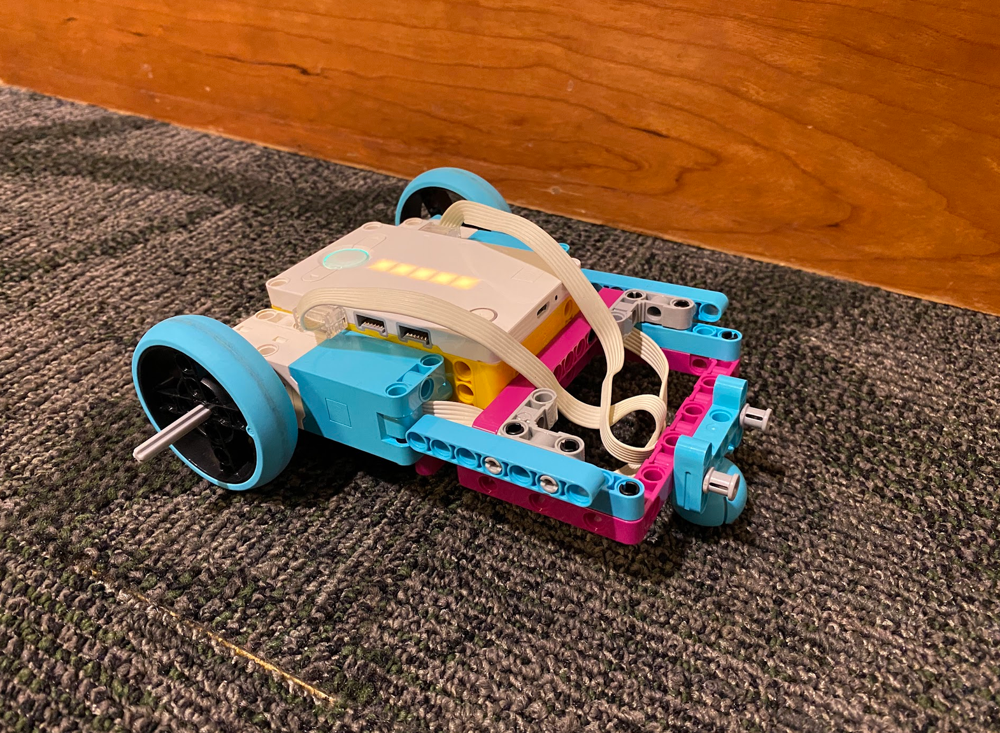
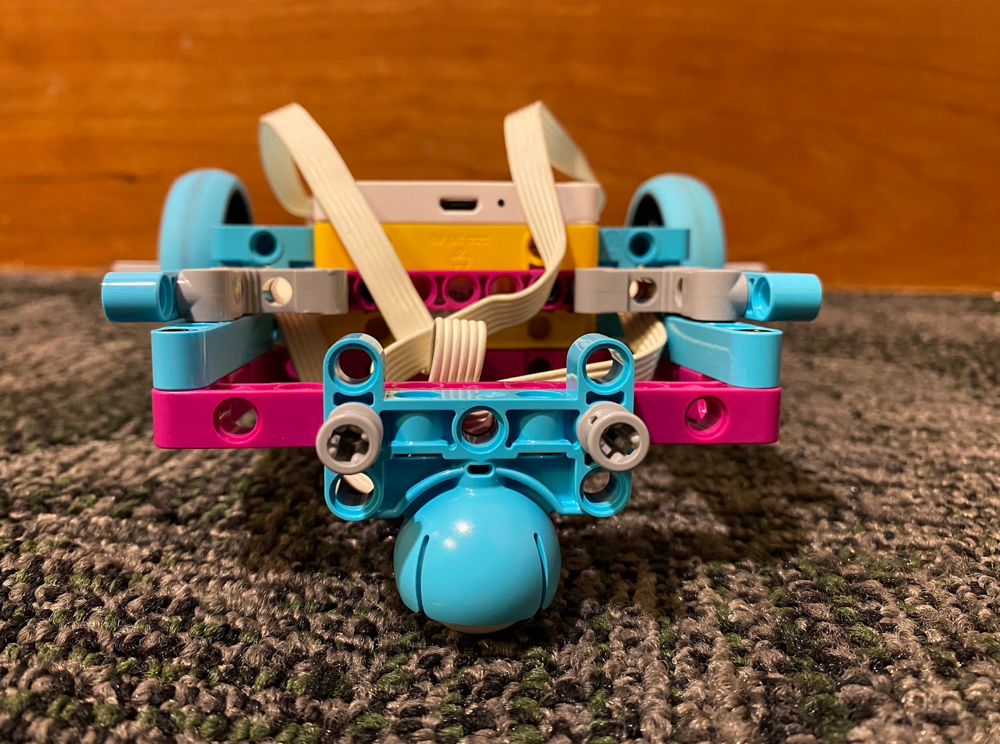
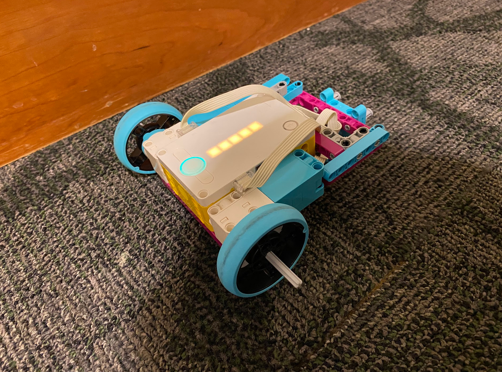
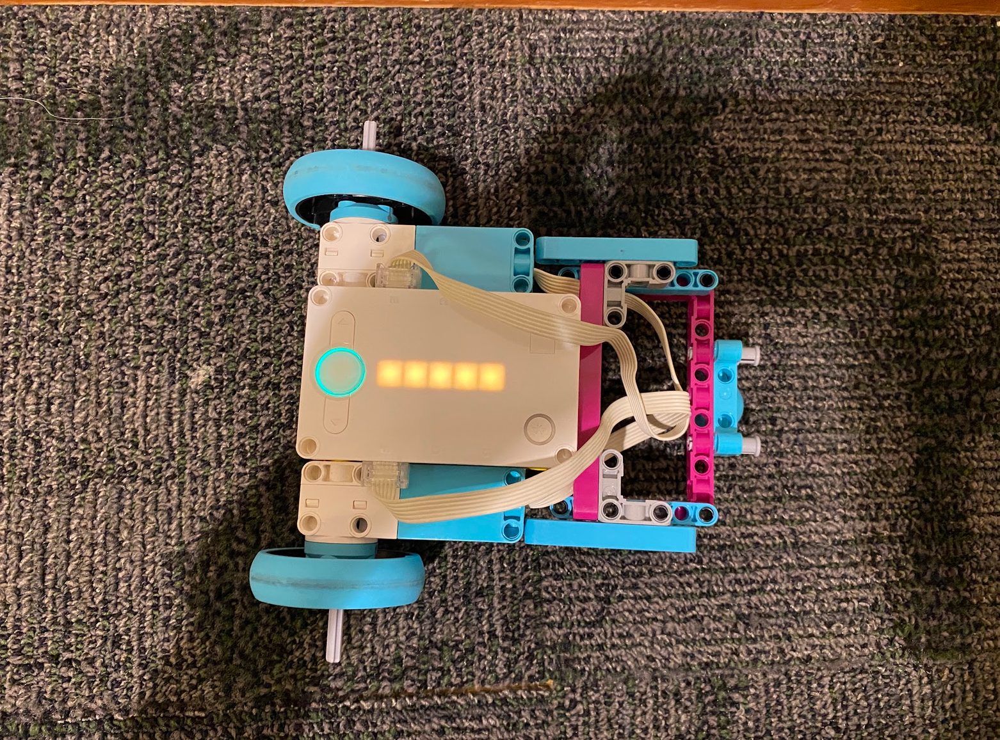

During development, the motors mounted on opposite sides were inverted and spun in opposite directions. Turning was also difficult because the two unpowered wheels added friction. I removed those wheels and used the ball cup as a freely moving third wheel, which had very little friction on carpet.
The assignment task was to program the car to:



I filmed the car from overhead to show its path. A side view would not capture the path as clearly.